Яндекс 360 (тестовое задание)
Оптимизация работы поддержки: новый интерфейс админки
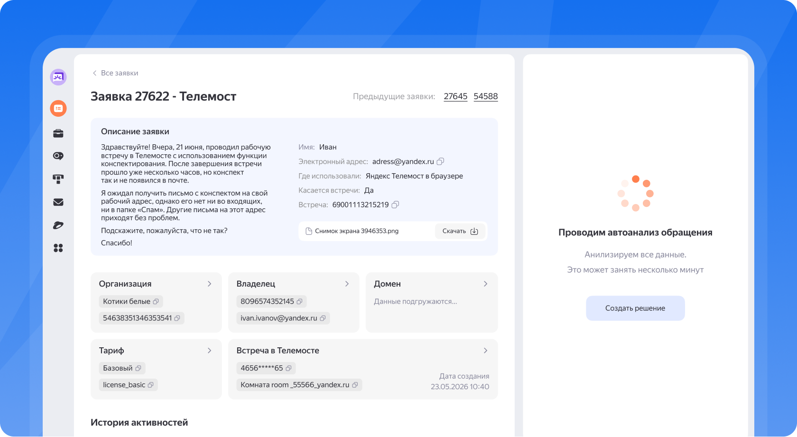
Контекст
Сотрудникам поддержки Яндекс 360 для решения обращений пользователей часто приходится искать информацию в нескольких админках разных сервисов. Каждая админка содержит данные только своего сервиса, поэтому для получения полной картины о пользователе приходится переключаться между ними.
Из-за необходимости работать в нескольких админках увеличивается время обработки обращений, особенно в межсервисных сценариях.
Спроектировать страницу в админке по пользователю, которая поможет сотруднику быстро получить общую информацию о пользователе по сервисам Яндекс 360. Интерфейс должен помогать:
- сформировать представление о пользователе;
- оценить использование сервисов пользователем;
- понимать контекст последних обращений в поддержку;
- уменьшить количество переходов в другие админки.
Текущая админка сотрудника
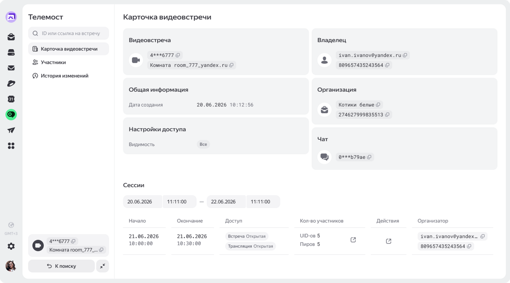
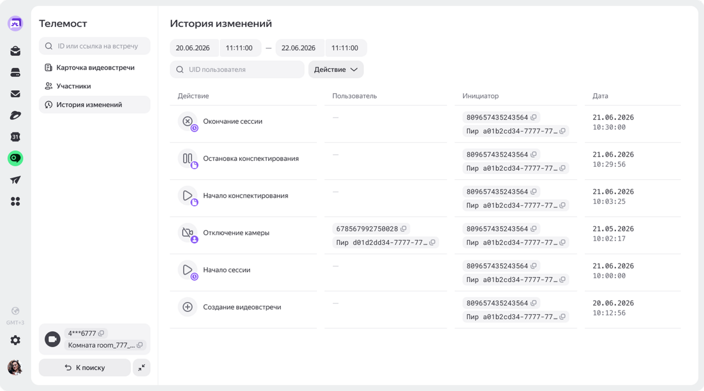
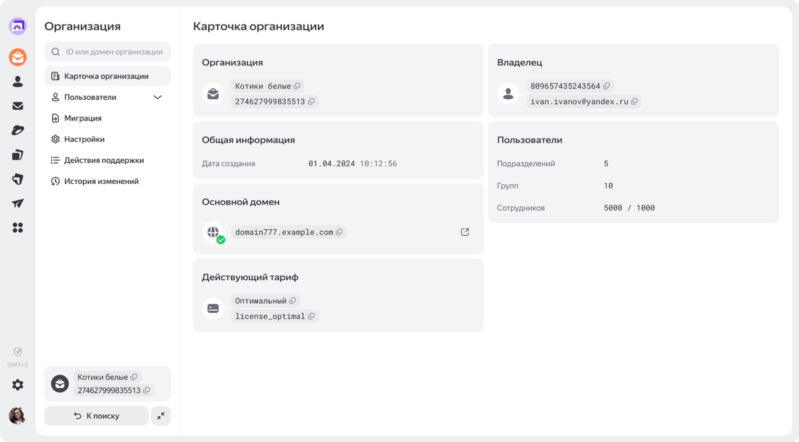
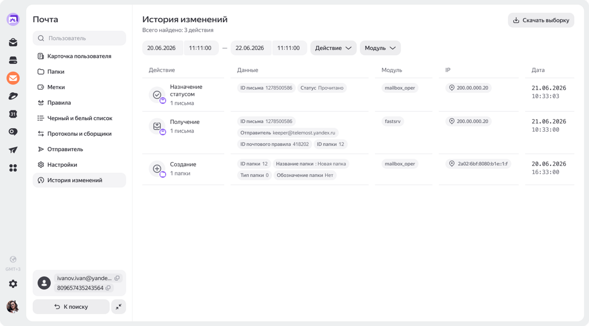
Цели бизнеса и пользователя
Данное изменение интерфейса должно помочь снизить общие затраты на поддержку за счёт роста продуктивности сотрудников. А также помочь увеличить количество выполненных вовремя задач, уменьшить количество просроченных задач и увеличить удовлетворённость сотрудников.
Главный пользователь — сотрудник поддержки Яндекс 360. Его ключевая задача — определить проблему и вынести решение.
Исследования
- Провела бенчмаркинг похожих сервисов (Jira, Zendesk, Яндекс Доски, Битрикс24) и отметила функционал.
- Так как мне недоступны данные аналитики и интервью с респондентами, я проанализировала исследования из открытых источников по теме обработки заявок служб поддержки.
- Переключения + рутина съедают до 40–60% времени.
- Канбан и ИИ ускоряют обработку заявок в несколько раз.
- Скорость первого ответа = ключевой драйвер лояльности.
- Доски лучше для визуального контроля статусов и загрузки, списки — для быстрого поиска и минимизации ошибок, поэтому интерфейс должен предлагать переключатель.
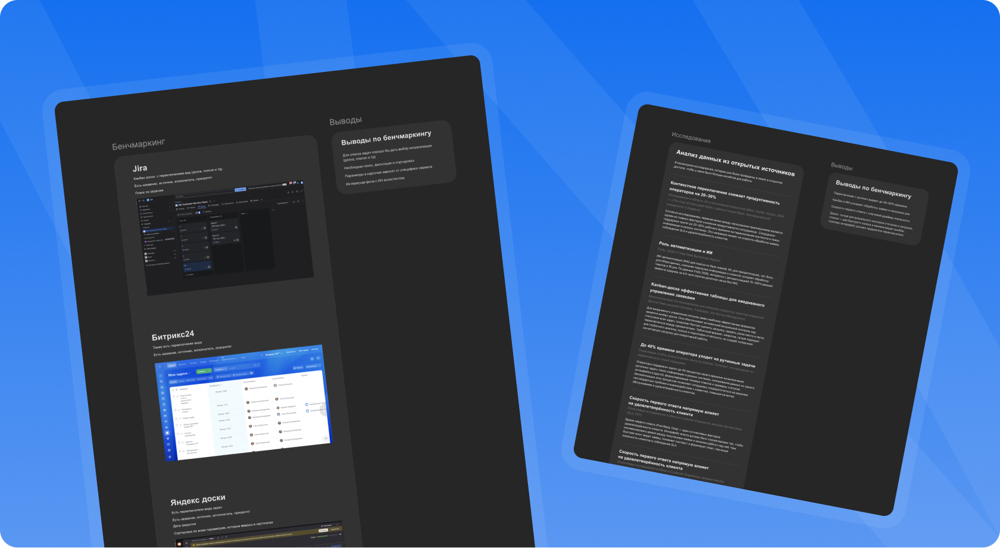
Если мы спроектируем единый интерфейс, который адаптируется под тип обращения и автоматически анализирует проблему, то мы сократим среднее время обработки заявки и повысим удовлетворённость клиентов, так как сотрудник поддержки будет тратить время не на поиск параметров, а на принятие решения.
Новый сценарий
Построила небольшую карту сценария, чтобы определить последовательность действий сотрудника поддержки при решении заявок.
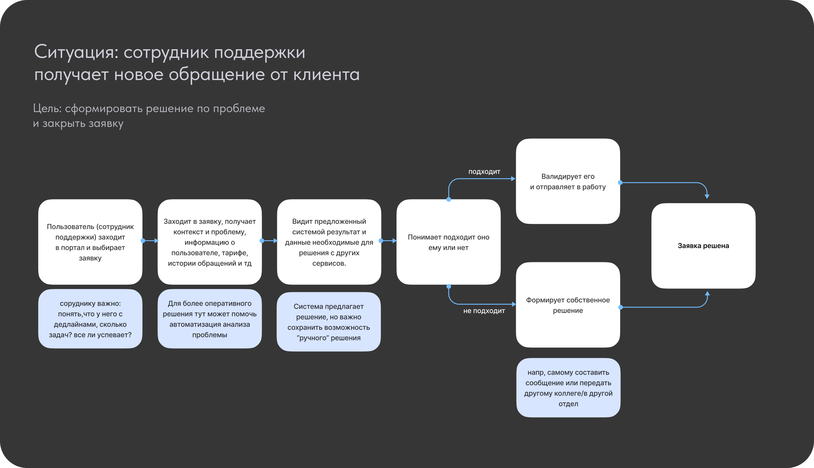
Результат
Доска с задачами
(Так как нет данных о том, где сотрудники берут заявки в работу)
Спроектировала единую точку входа — так мы ускоряем обработку
Новый раздел на сайдбаре
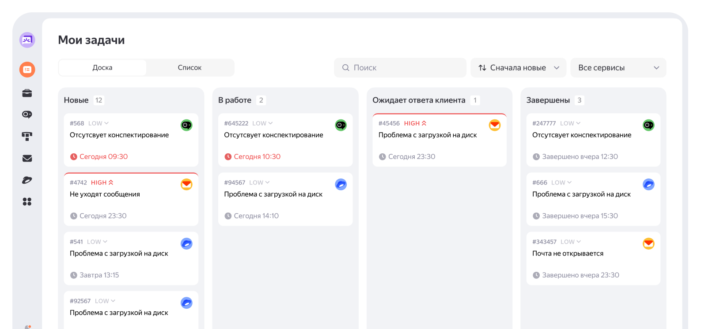
Задачи
У задач выведены краткое саммери, дедлайн, сервис, номер и приоритет
Дедлайн
уже близко!
Пока можно
не переживать
Низкий приоритет задачи
Высокий приоритет
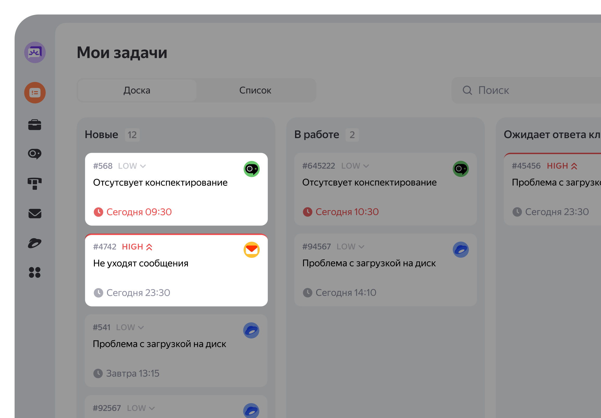
Управление доской
Переключение вида задач
Фильтрация по сервисам
Сортировка по:
— новизне
— приоритетности
— дедлайнам
Поиск по задачам
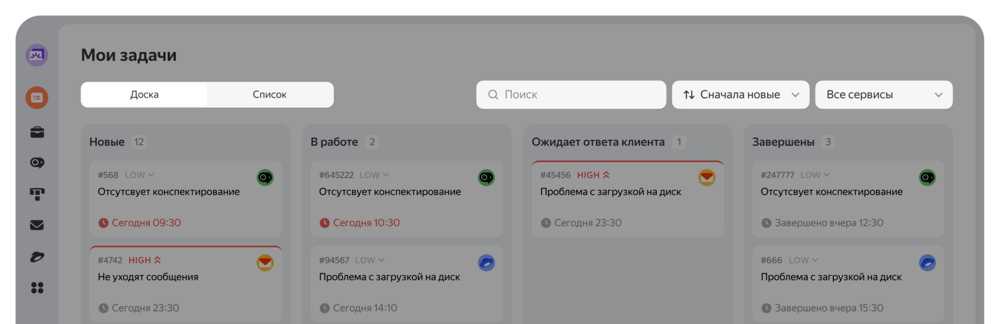
Страница заявки
Единая точка для получения необходимых данных по заявке
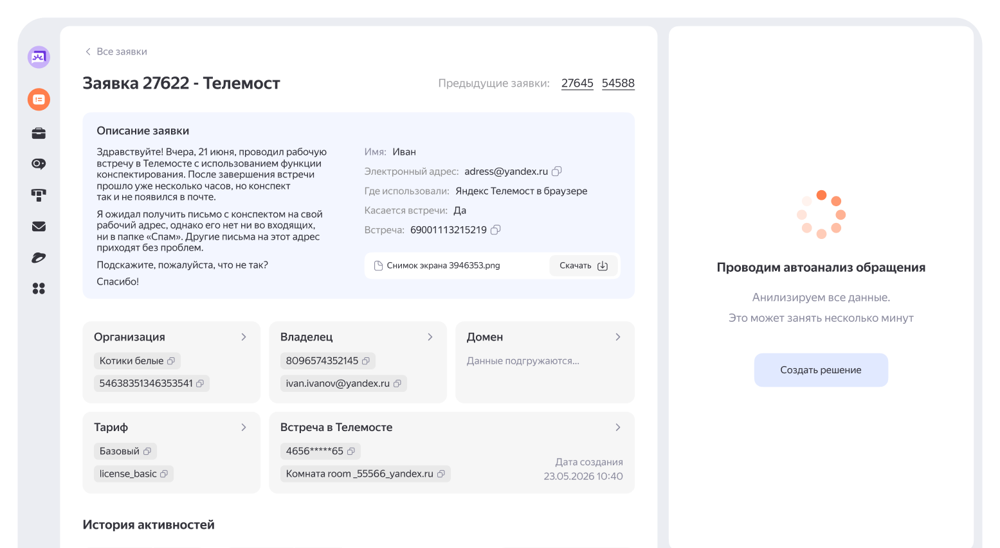
Контекст обращений
История обращений
Тут полная информация от клиента по текущей заявке
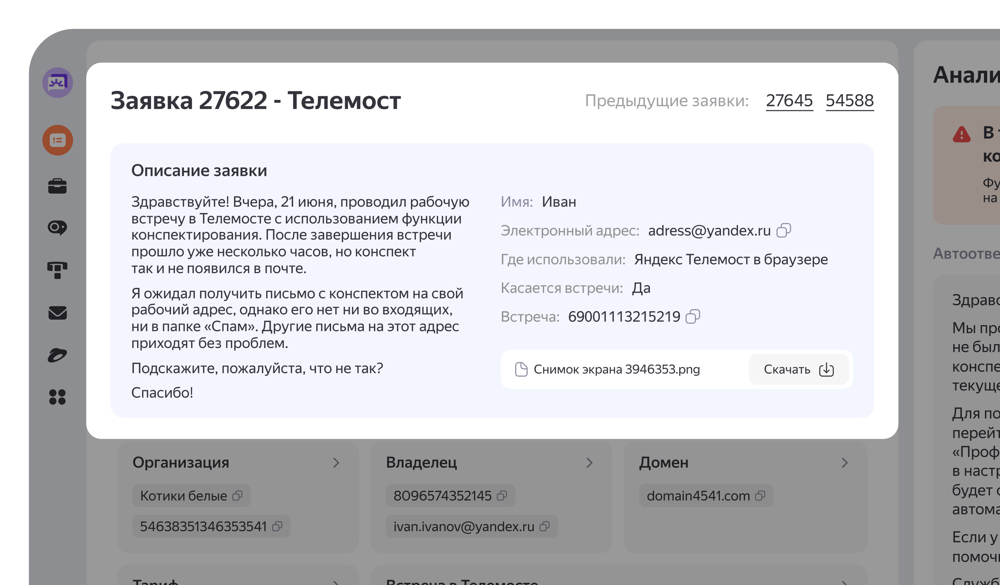
Автоанализ
Система анализирует данные, даёт предварительный результат и предлагает решение
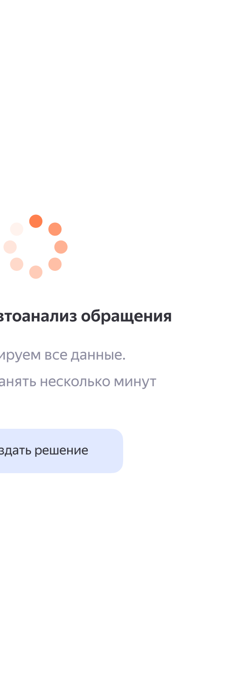
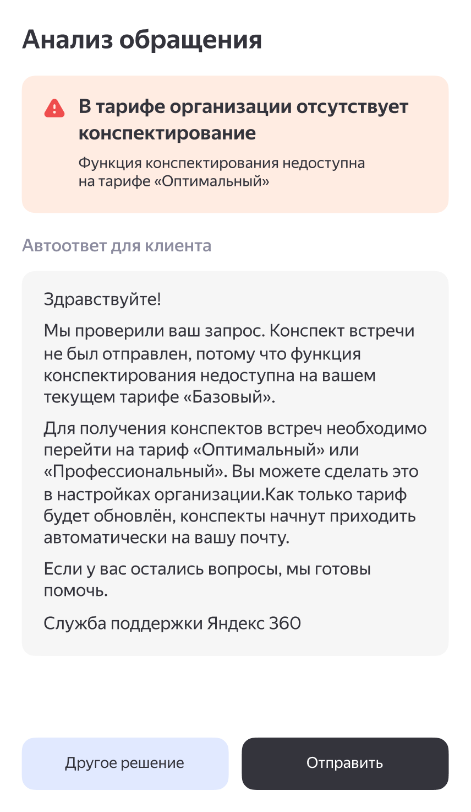
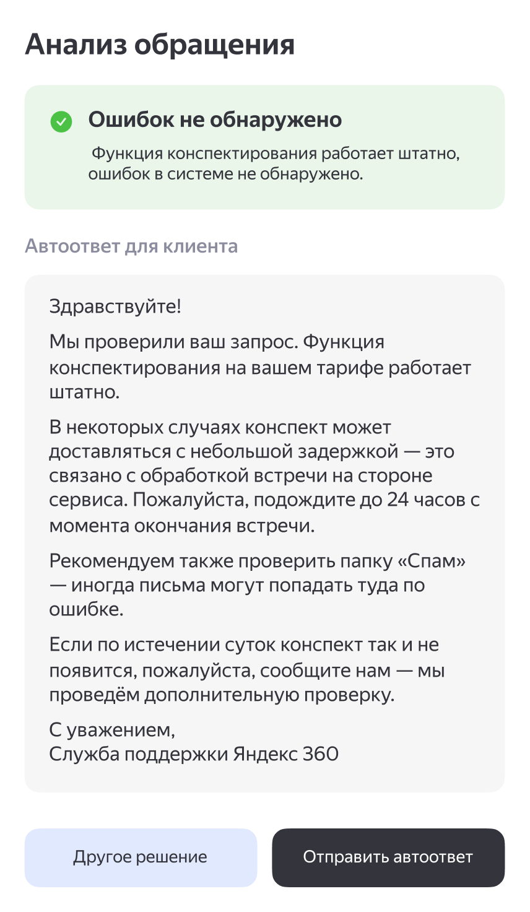
Видим проблему или её отсутствие
Видим причину
Валидируем решение...
Выбираем действие
А если
не согласны?
Можем сами проверить необходимые параметры. Выведено только то, что требует задача
Совмещённая история активностей по сервисам
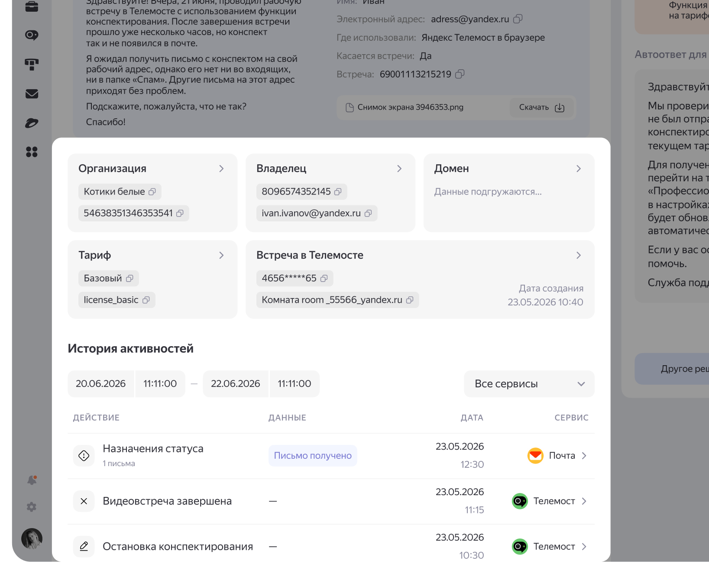
И формируем собственное решение
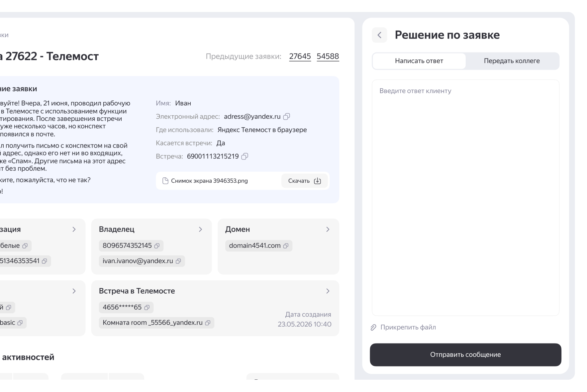
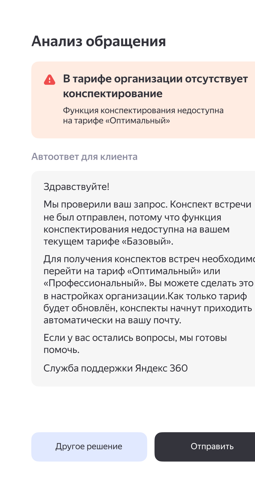
А что дальше?
- Юзабилити-тестирование новой версии. Проводим тесты на прототипе с пользователями админки.
- После выкатки оцениваем метрики: скорость выполнения задачи (насколько сократилось время на выполнение задачи) и скорость ответа от менеджера до решения запроса.
- Итеративная доработка. Результаты тестов и метрик станут основой для следующей итерации редизайна.